在线提问、回答系统-web前端
项目链接：
(用户系统) https://github.com/lingkeniran/qasystem
(管理员系统) https://github.com/lingkeniran/qasystem-manager
(用户系统) https://github.com/lingkeniran/qasystem
(管理员系统) https://github.com/lingkeniran/qasystem-manager
项目展示：
金融科技服务平台企业数据的无监督分类系统-web前端
项目展示：
“绿色回收站”--垃圾回收平台-微信小程序
项目展示：
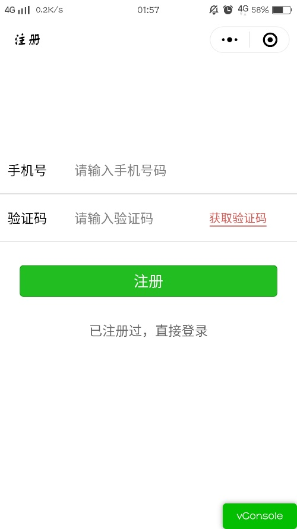
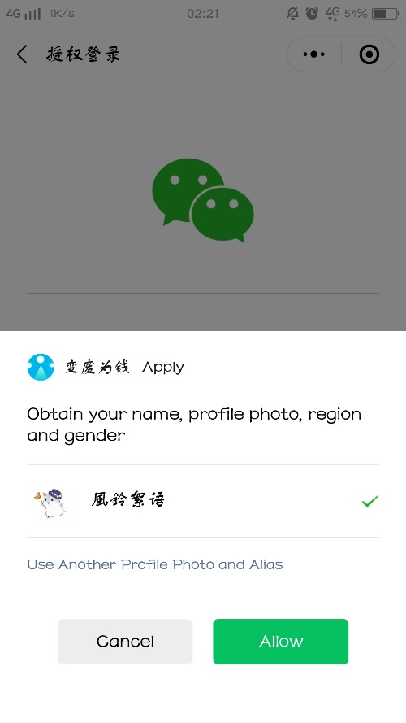
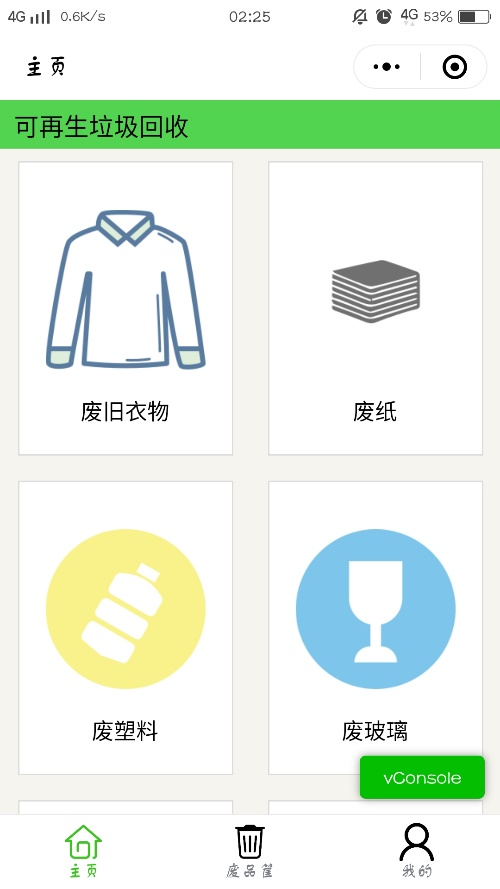
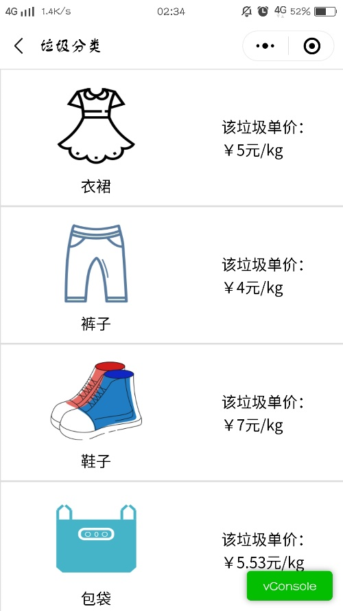
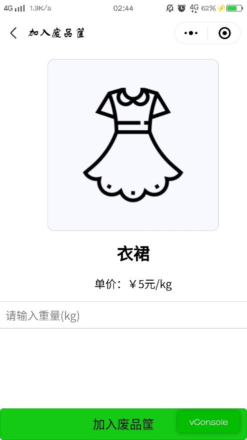
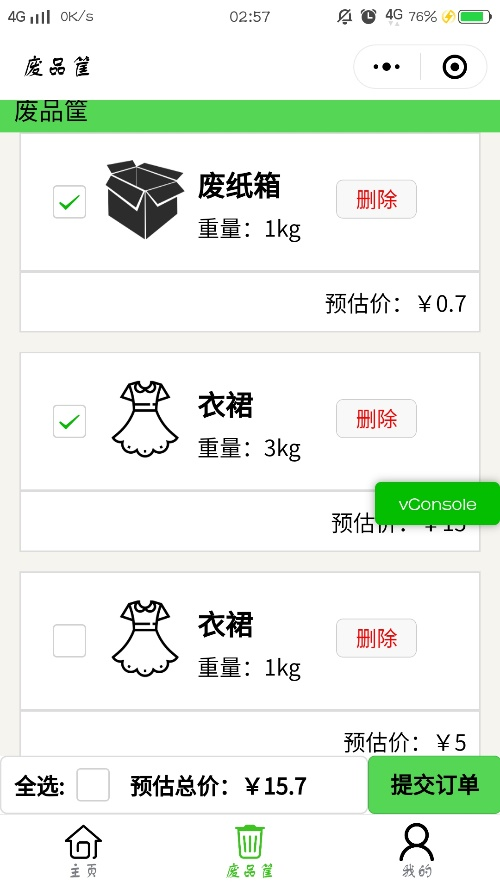
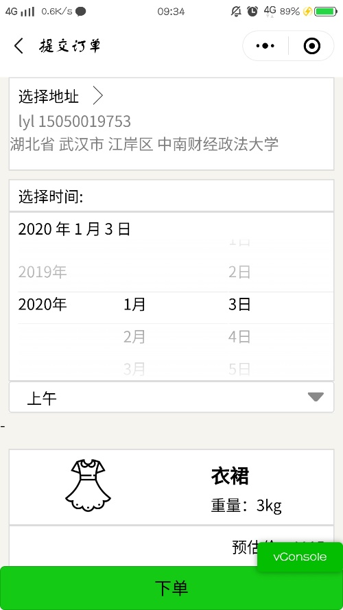
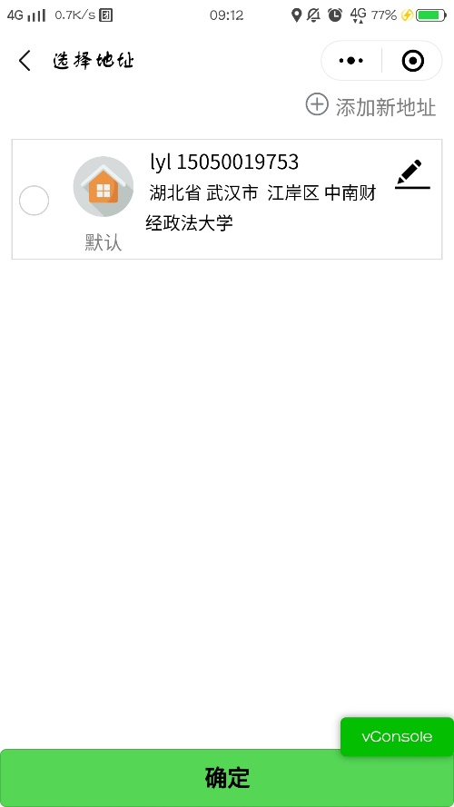
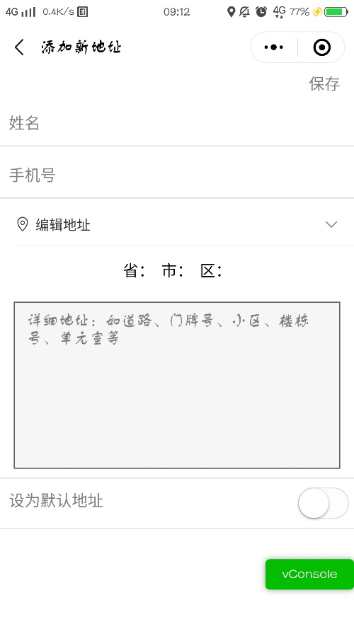
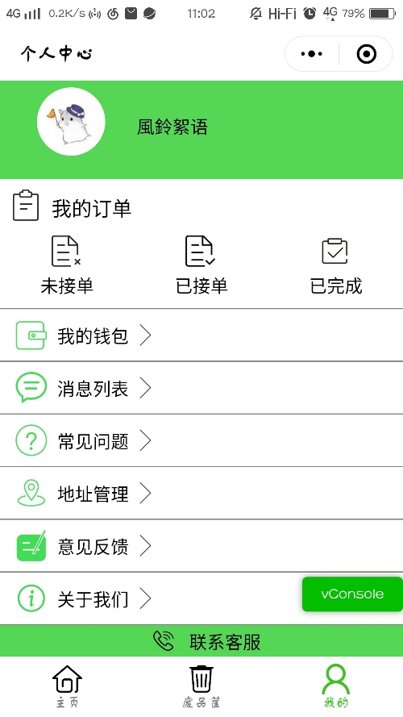
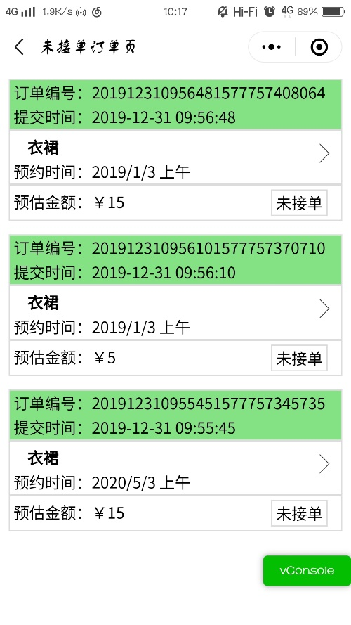
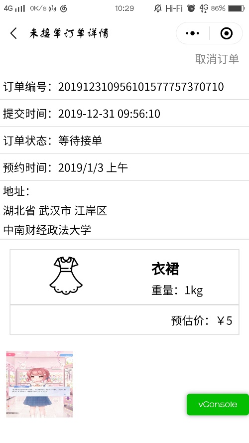
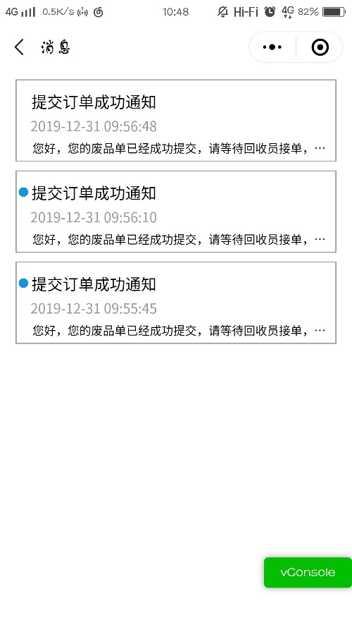
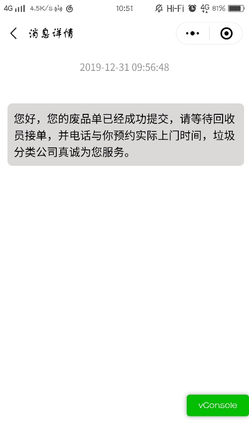
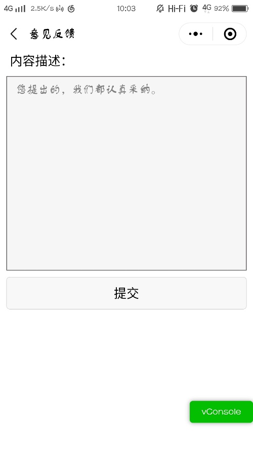
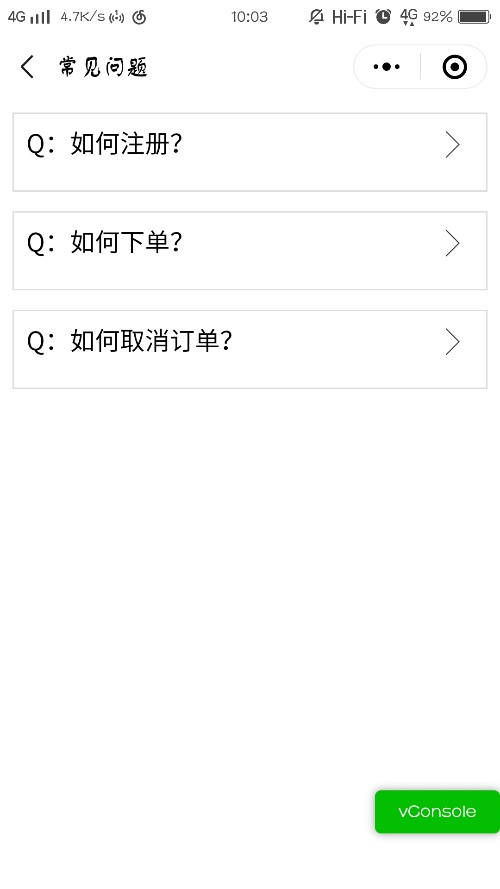